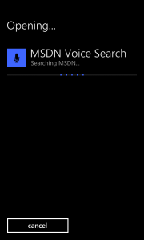
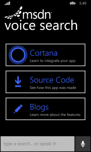

MSDN Voice Search is a Store application for Windows Phone 8.1 and Windows Phone 8.0 written to demonstrate the new capabilities of Cortana-integrated Voice Commands on Windows Phone 8.1 as well as to provide examples of good practices when dealing with user input, including by "continuing the conversation" using the in-application Speech Recognition and Speech Synthesis APIs available on Windows Phone.
The application itself is a fully-functional utility designed to enable voice- and text-based natural language searches of MSDN, but it's primary purpose is to facilitate developer interest and education in the Speech and Natural Language integration features available on Windows Phone.
The MSDN Voice Search project was built using the Windows Phone 8.1 SDK on Visual Studio 2013. Prior versions of Visual Studio are not supported.
Description
MSDN Voice Search demonstrates end-to-end use of Cortana-enabled Voice Commands, Speech Recognition, and Speech Synthesis as combined to deliver a complete and natural user experience for both spoken and text input.
The included Voice Command Definition files (VCDs) are installed at application launch, which will provide integration into the system-level commands for queries like "MSDN, find Windows Phone Voice Commands" or "MSDN, go to the Windows Phone Dev Center."
The code in MainPage.xaml.cs demonstrates low- to mid-complexity management of Voice Command parsing, Speech Recognition use, and Speech Synthesis use.
 
To learn more about the Voice Command, Speech Recogniton, and Speech Synthesis capabilities available to Store applications on Windows Phone, see the Bing Dev Center page: http://www.bing.com/dev/en-us/speech.